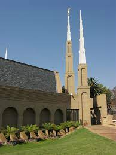

Temple Album
☰
Home
Old
New
Large
Small
My Favorite Temples
Benin City Nigeria Temple
Lagos Nigeria Temple
Washington D.C Temple
Aba Nigeria Temple
Accra Ghana Temple
Salt Lake Temple
Cardston Alberta Temple
Kenya Nairobi Temple

South Africa Temple